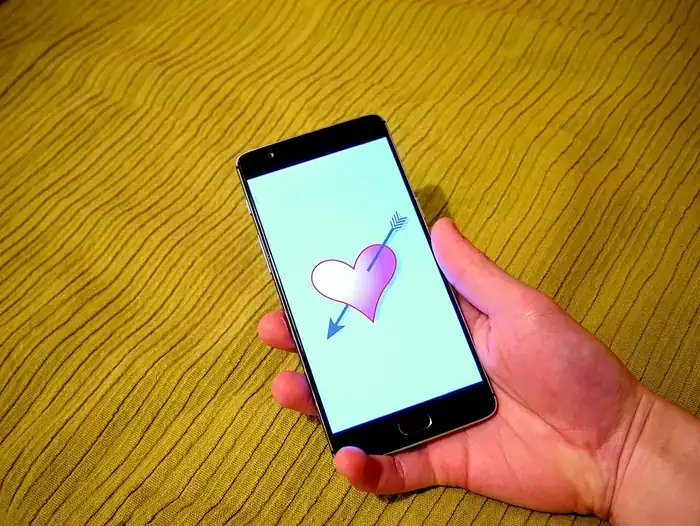

The practice
The US Federal Trade Commission found that Match.com had sent emails to users from accounts it knew to be fraudulent, to encourage them to subscribe, and that some profiles were created by the company itself.
Maps, diagrams and images



The settlement
The company settled in 2019, and the case is documented in the regulator's complaint and consent order. It is one of several cases establishing that a platform's apparent activity can be manufactured.
The archive files it as documented.
Documented: the regulator's findings.
Documented: the fake accounts.
Documented: the settlement.
Documented: the deceptive mechanism.
The label: documented.
Why it is in the archive
Because it is the clearest case of a company manufacturing the activity that made it attractive.
Open resources on this topic
- PapersOpen-access articles: DOAJ · PubMed Central · Internet Archive Scholar
- BooksPublic-domain and borrowable copies: Open Library · Project Gutenberg · Google Books · Internet Archive
Cite this page
Momin, S. (2026). Match.com's Fake Messages. The Larger World Archive. https://drsamonline.github.io/LARGE_GLOBE/match-fake-messages.htmlMomin, Sohil. “Match.com's Fake Messages.” The Larger World Archive, 2026, https://drsamonline.github.io/LARGE_GLOBE/match-fake-messages.html.Momin, Sohil. “Match.com's Fake Messages.” The Larger World Archive, 2026. https://drsamonline.github.io/LARGE_GLOBE/match-fake-messages.html.@misc{matchcoms2026match,
author = {Momin, Sohil},
title = {Match.com's Fake Messages},
year = {2026},
howpublished = {The Larger World Archive},
url = {https://drsamonline.github.io/LARGE_GLOBE/match-fake-messages.html},
note = {Last reviewed 20 November 2026}
}Last reviewed 20 November 2026 · Corrections policy · this page is not peer reviewed
What the fabricated screenshots are for
Fabricated chat screenshots are cheap to make and hard to disprove, because the platform that would hold the record does not publish it. That asymmetry is the whole technique: the burden of proof falls on the person denying a conversation that never happened.
The countermeasures that work are procedural rather than technical — asking for the record from the account holder, checking the interface details against the version in use at the time, and treating a screenshot as a claim rather than a document. The archive keeps the page because a screenshot is now the most common form of 'evidence' on the internet and the least verifiable.
Sources for this page
- Wikipedia, “Match.com” — the serviceen.wikipedia.org
- Wikipedia, “Federal Trade Commission” — the regulatoren.wikipedia.org
- Wikipedia, “Deception” — the categoryen.wikipedia.org
- Wikipedia, “Online dating service” — the marketen.wikipedia.org
- Archive.org — Gamayo v. Match.com (court filing)archive.org/details/gov.uscourts.txnd.210014